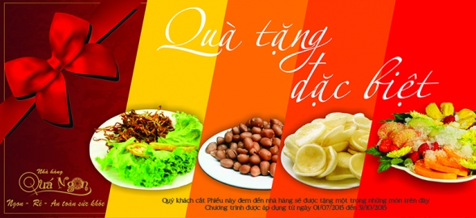

Welcom to Com Nieu restaurant
Cơm niêu Restaurant
Thương hiệu nổi tiếng Món Huế của chúng tôi là chuỗi nhà hàng ăn tại chỗ, cung cấp thức ăn Việt Nam an toàn sức khỏe, hương vị hoàng gia, thường được xem như là đặc trưng ẩm thực Huế. Chúng tôi phục vụ món ăn bằng cách sử dụng công thức nấu ăn bí mật gia truyền của chúng tôi . Điểm mạnh nổi trội là về hương vị, an toàn thực phẩm và nguồn cung ứng thực phẩm trực tiếp, giúp Món Huế có hơn 50 món ăn khác biệt nhau với giá cả phải chăng, đáp ứng khẩu vị khác nhau của mọi khách hàng và khuyến khích khách hàng ghé đến thường xuyên.

Địa chỉ:
Số 14, ngõ 4, Nguyễn Đình Chiểu, Hai Bà Trưng, Hà Nội
Mở cửa: 9:00 đến 18:00
Phòng 2304, tầng 23, toà nhà StarCity, 81 Lê Văn Lương, Nhân Chính, Thanh Xuân, Hà Nội
Mở cửa: 9:00 đến 18:00